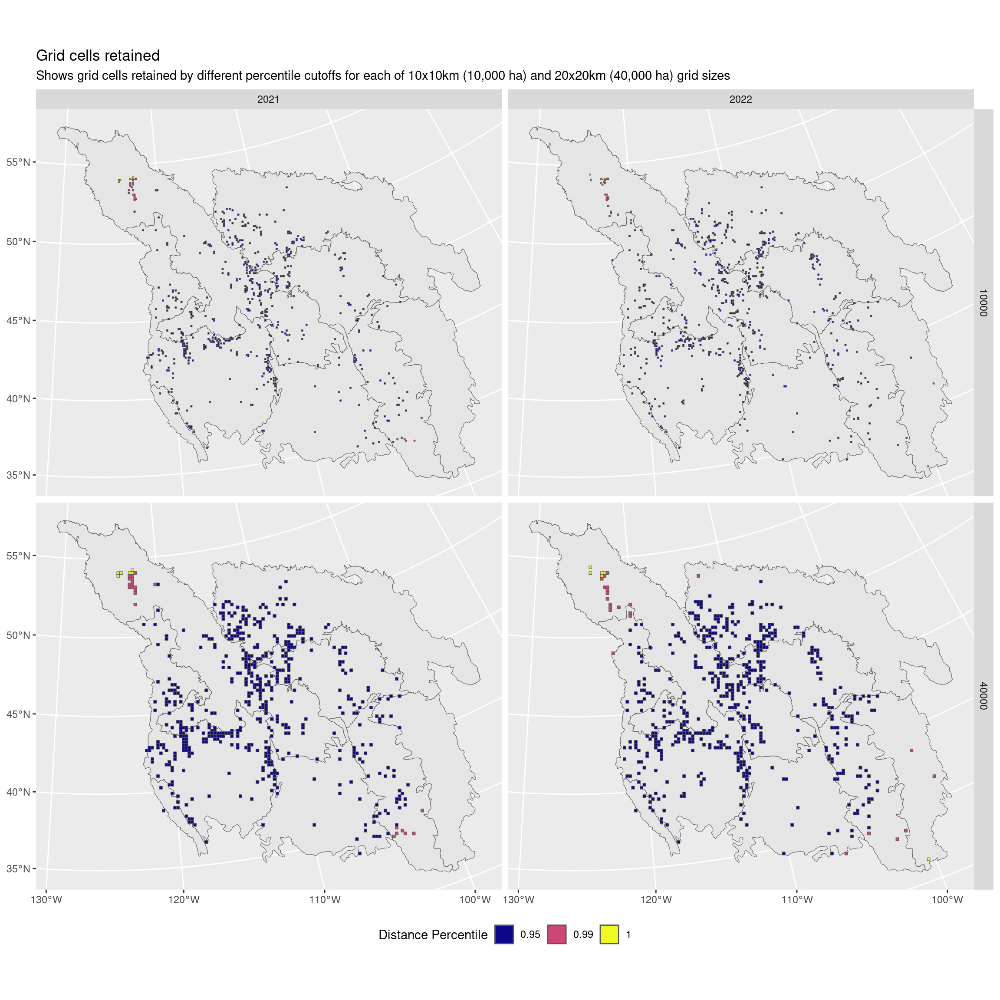
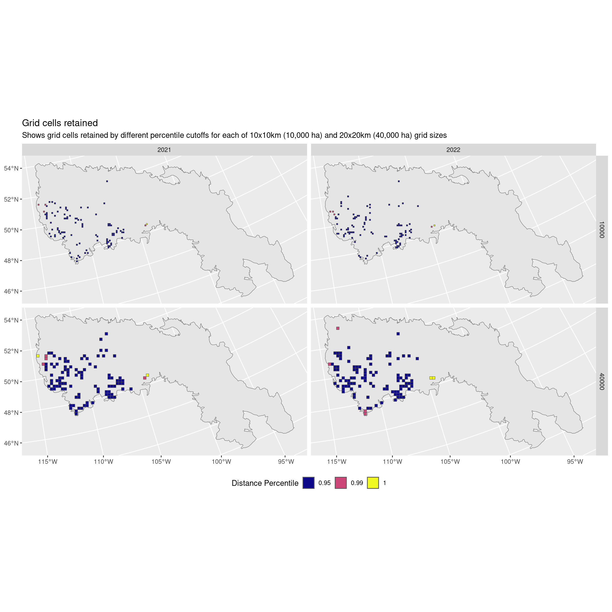

library(tidyverse)
library(sf)
library(patchwork)
grid_10 <- read_rds("Data/Datasets/grid_10km.rds")
grid_20 <- read_rds("Data/Datasets/grid_20km.rds")
obs_10 <- read_rds("Data/Datasets/lobcur_grid_10_coords.rds")
obs_20 <- read_rds("Data/Datasets/lobcur_grid_20_coords.rds")
base_map <- read_rds("Data/Datasets/base_map.rds")
bcr <- read_rds("Data/Datasets/bcr_map.rds")
source("00_functions.R")5 - Data Outputs
Here we will start to calculate the actual measurements for use in the final analyses.
To see an image more closely, right-click and select “Open Image in new Tab” (or similar)
Apply Quality Control
Filter out data we don’t want, and create a ‘control’ data set that contains all valid grid cells regardless of whether there was an observation. I think this control data set will be useful for comparing patterns. That way if you find a really strong pattern in the shift of occupied grid cells but no pattern in the whole set of grid cells, you can better say that it’s not a matter of observer bias.
So in general…
- How many years do we have?
- Keep >= 5 years for 10x10km grid
- Keep >= 10 years for 20x20km grid
- Calculate an additional ‘control’ set
For the 10x10km grids…
obs_10_qc <- obs_10 |>
mutate(n_years = n_distinct(year, na.rm = TRUE), .by = "grid_id") |>
filter(n_years >= 5)
# Create the control data (all grids)
all_10 <- mutate(obs_10_qc, trt = "all")
# Keep only grids with a presence
presence_10 <- filter(obs_10_qc, presence == TRUE) |>
mutate(trt = "present")
# Join the control and presence data back together
obs_10_qc <- bind_rows(all_10, presence_10)
# Prepare for taking measurements - Add grids (make spatial) and sort
obs_10_qc <- obs_10_qc |>
right_join(x = grid_10, y = _, by = c("grid_id", "area_ha", "bcr", "bc")) |>
arrange(grid_id, year, presence)Now for the 20x20km grids…
obs_20_qc <- obs_20 |>
mutate(n_years = n_distinct(year, na.rm = TRUE), .by = "grid_id") |>
filter(n_years >= 5)
# Create the control data (all grids)
all_20 <- mutate(obs_20_qc, trt = "all")
# Keep only grids with a presence
presence_20 <- filter(obs_20_qc, presence == TRUE) |>
mutate(trt = "present")
# Join the control and presence data back together
obs_20_qc <- bind_rows(all_20, presence_20)
# Prepare for taking measurements - Add grids (make spatial) and sort
obs_20_qc <- obs_20_qc |>
right_join(x = grid_20, y = _, by = c("grid_id", "area_ha", "bcr", "bc")) |>
arrange(grid_id, year, presence)Now that we’ve applied our quality control, we can stick these two data sets together and apply all the following measurements to each (this just avoids repeating ourselves).
obs_qc <- bind_rows(obs_10_qc, obs_20_qc)Again, to avoid repeating ourselves, we’re going to duplicate these data sets to get our regional splits. We’re creating a column called region that we can now use in our calculations to calculate specific data for.
obs_all <- obs_qc |>
mutate(region = "all")
obs_bcr <- obs_qc |>
mutate(region = bcr)
obs_bc <- filter(obs_qc, bc == TRUE) |> # Only BC spots
mutate(region = "bc")
obs_qc <- bind_rows(obs_all, obs_bc, obs_bcr)Distince cutoffs
Here we consider using only the inner 99% or 95% of data points when calculating the measurements we’re interested in.
We do this by first calculating a centroid and then the distance of each grid cell to this centroid. We keep only grid cells <= the X percentile of distances (this is performed by the filter_dist() function, from the 00_functions.R file).
dist <- obs_qc |>
group_by(region, area_ha, year, trt) |>
nest() |>
ungroup() |>
mutate(
# Subset grids to keep only those in the X distance percentile to the centroid
grids_100 = map(data, ~filter_dist(.x, p = 1)),
grids_99 = map(data, ~filter_dist(.x, p = 0.99)),
grids_95 = map(data, ~filter_dist(.x, p = 0.95))) |>
pivot_longer(cols = contains("grids"), names_to = "grid_perc", values_to = "grids") |>
arrange(region, area_ha, year, grid_perc, trt)Let’s take a look at what that means for the data when we’re looking at all regions together
eg <- filter(dist, trt == "present", region == "all") |>
unnest(cols = "grids") |>
arrange(desc(perc)) |>
st_set_geometry("geometry")
ggplot() +
geom_sf(data = bcr) +
geom_sf(data = filter(eg, year >= 2021), aes(fill = factor(perc))) +
scale_fill_viridis_d(option = "plasma") +
facet_grid(area_ha ~ year) +
labs(fill = "Distance Percentile",
title = "Grid cells retained",
subtitle = "Shows grid cells retained by different percentile cutoffs for each of 10x10km (10,000 ha) and 20x20km (40,000 ha) grid sizes") +
theme(legend.position = "bottom")
Now what about only the northern BCR?
eg <- filter(dist, trt == "present", region == "11 - Prairie Potholes") |>
unnest(cols = "grids") |>
arrange(desc(perc)) |>
st_set_geometry("geometry")
ggplot() +
geom_sf(data = filter(bcr, bcr == "11 - Prairie Potholes")) +
geom_sf(data = filter(eg, year >= 2021), aes(fill = factor(perc))) +
scale_fill_viridis_d(option = "plasma") +
facet_grid(area_ha ~ year) +
labs(fill = "Distance Percentile",
title = "Grid cells retained",
subtitle = "Shows grid cells retained by different percentile cutoffs for each of 10x10km (10,000 ha) and 20x20km (40,000 ha) grid sizes") +
theme(legend.position = "bottom")
I think I recommend not using a cutoff and keeping all the data.
It looks like we’re actually omitting some of those most northerly points!
Instead we rely on the fact that we have already done a solid round of quality control. I think we otherwise risk omitting data that are actually the points of interest!
Alternatively I would recommend only using a 99% percentile if necessary.
Measurements
Now we have a bunch of different sets of grid cells for each of the two different sizes of grid cells (10x10km vs. 20x20km).
In this data we have a set of grid cells that define:
year- The year the observations were madepresence- Whether we’re looking at all grid cells (“all”) or only those that had a curlew observation (“presence”)grid_perc- Whether any grid cells have been omitted for being in the upper percentile distance from the centroid
head(dist)# A tibble: 6 × 7
area_ha year trt region data grid_perc grids
<dbl> <dbl> <chr> <chr> <list> <chr> <list>
1 10000 2010 all 10 - Northern Rockies <sf [532 × 12]> grids_100 <sf>
2 10000 2010 present 10 - Northern Rockies <sf [19 × 12]> grids_100 <sf>
3 10000 2010 all 10 - Northern Rockies <sf [532 × 12]> grids_95 <sf>
4 10000 2010 present 10 - Northern Rockies <sf [19 × 12]> grids_95 <sf>
5 10000 2010 all 10 - Northern Rockies <sf [532 × 12]> grids_99 <sf>
6 10000 2010 present 10 - Northern Rockies <sf [19 × 12]> grids_99 <sf> The two list columns are data for the original non-filtered set of grid cells (the same as grids when grid_perc is 100), and grids which are the filtered grid cells containing only those within the distance percentile cutoff.
Now for each of these individual combinations and for each size of grid, we’re going to calculate a bunch of different metrics.
Next we calculate
extent_m2- the convex hull of our selected grid cells, and then the area of this polygon (extent()function) in m^2grid_n- the total number of grid cells in this group (i.e. overall if presence = “all”, or with a curlew observation if presence = “present”)grid_area_m2- the total area occupied by these grid cells (in m^2)cent_lat/cent_lon- the lat/lon of the centroid of the area definied by these grid cellsmin_lat/max_lat/min_lon/max_lon- the max/min of lat/lon around the area defined by these grid cells
We’ll also calculate some sample size metrics for use when reporting or if you want to double check anything. These are all prefaced by samples_ to be clear.
In all cases, these measurements are “in that region in the grid cells we used for that year (within the dates we specified)” (…)
samples_total_checklists- the total number of checklists …samples_median_checklists- the median number of checklists …samples_total_obs- the total number of checklists with an observation of a curlew …samples_median_obs- the median number of checklists with an observation of a curlew …samples_date_min- the earliest date a checklist was observed on …samples_date_max- the latest date a checklist was observed on …samples_n_years_min- the minimum number of years for which we have at least one checklist for any grid cell …samples_n_years_max- the maximum number of years for which we have at least one checklist for any grid cell …samples_n_years_median- the median number of years for which we have at least one checklist for any grid cell …
final <- dist |>
arrange(region, area_ha, year, grid_perc, trt) |>
mutate(
extent_m2 = map_dbl(grids, extent),
grid_n = map_dbl(grids, ~n_distinct(.x$grid_id)),
grid_area_m2 = map_dbl(grids, ~sum(st_area(.x))),
# Transform to lat/lon for the rest of the calculations
grids = map(grids, ~st_transform(.x, crs = 4326)),
centroid = map(grids, ~st_union(.x) |> st_centroid() |> st_coordinates() |> as.data.frame()),
bbox = map(grids, ~data.frame(as.list(st_bbox(.x)))),
samples_total_checklists = map_dbl(grids, ~sum(.x$total_checklists)),
samples_median_checklists = map_dbl(grids, ~median(.x$total_checklists)),
samples_total_obs = map_dbl(grids, ~sum(.x$total_obs)),
samples_median_obs = map_dbl(grids, ~median(.x$total_obs)),
samples_date_min = map_dbl(grids, ~min(.x$date_min)),
samples_date_max = map_dbl(grids, ~max(.x$date_max)),
samples_n_years_min = map_dbl(grids, ~min(.x$n_years)),
samples_n_years_max = map_dbl(grids, ~max(.x$n_years)),
samples_n_years_median = map_dbl(grids, ~median(.x$n_years))) |>
unnest(cols = c("centroid", "bbox")) |>
rename("cent_lat" = "Y", "cent_lon" = "X",
"min_lat" = "ymin", "max_lat" = "ymax",
"min_lon" = "xmin", "max_lon" = "xmax")Save the outputs
For convenience, we’ll be saving this data set as a series of smaller data sets, each labelled by the subset of data it contains.
As an R file
write_rds(final, "Data/Datasets/final.rds")CSV files of the final measurements
f <- final |>
mutate(region_save = region,
region_save = if_else(!region %in% c("all", "bc"), "bcr", region),
dist_perc = str_replace(grid_perc, "grids", "dist"),
perc_save = str_remove(grid_perc, "grids_"),
area_m = sqrt(area_ha) / 10) |>
select(-data, -grid_perc) |>
relocate(area_ha, trt, region, dist_perc)
f |>
select(-grids) |>
mutate(file = paste0("Data/Final/lobcur_final_", area_m, "x_", region_save,
"_", if_else(trt == "all", "control", "present"),
"_filtered_", perc_save, ".csv")) |>
group_by(region_save, area_m, perc_save, trt, file) |>
nest() |>
ungroup() |>
select(x = data, file) |>
pwalk(write_csv)Spatial data files of the grid collections
These fines contain all grids for all years - Presence (presence is TRUE/FALSE) - Regions are defined by bcr (name of BCR) and by bc (TRUE/FALSE)
f |>
filter(trt == "all", region_save == "all") |>
mutate(file = paste0("Data/Spatial/lobcur_final_", area_m,
"x_filtered_", perc_save, ".gpkg")) |>
select(grids, file, year) |>
unnest(cols = "grids") |>
nest(obj = -"file") |>
select(obj, dsn = file) |>
pwalk(st_write, append = FALSE)Deleting layer `lobcur_final_10x_filtered_100' using driver `GPKG'
Writing layer `lobcur_final_10x_filtered_100' to data source
`Data/Spatial/lobcur_final_10x_filtered_100.gpkg' using driver `GPKG'
Writing 102110 features with 13 fields and geometry type Polygon.
Deleting layer `lobcur_final_10x_filtered_95' using driver `GPKG'
Writing layer `lobcur_final_10x_filtered_95' to data source
`Data/Spatial/lobcur_final_10x_filtered_95.gpkg' using driver `GPKG'
Writing 97000 features with 13 fields and geometry type Polygon.
Deleting layer `lobcur_final_10x_filtered_99' using driver `GPKG'
Writing layer `lobcur_final_10x_filtered_99' to data source
`Data/Spatial/lobcur_final_10x_filtered_99.gpkg' using driver `GPKG'
Writing 101082 features with 13 fields and geometry type Polygon.
Deleting layer `lobcur_final_20x_filtered_100' using driver `GPKG'
Writing layer `lobcur_final_20x_filtered_100' to data source
`Data/Spatial/lobcur_final_20x_filtered_100.gpkg' using driver `GPKG'
Writing 63103 features with 13 fields and geometry type Polygon.
Deleting layer `lobcur_final_20x_filtered_95' using driver `GPKG'
Writing layer `lobcur_final_20x_filtered_95' to data source
`Data/Spatial/lobcur_final_20x_filtered_95.gpkg' using driver `GPKG'
Writing 59942 features with 13 fields and geometry type Polygon.
Deleting layer `lobcur_final_20x_filtered_99' using driver `GPKG'
Writing layer `lobcur_final_20x_filtered_99' to data source
`Data/Spatial/lobcur_final_20x_filtered_99.gpkg' using driver `GPKG'
Writing 62465 features with 13 fields and geometry type Polygon.